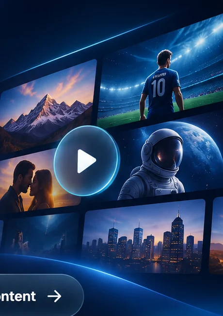
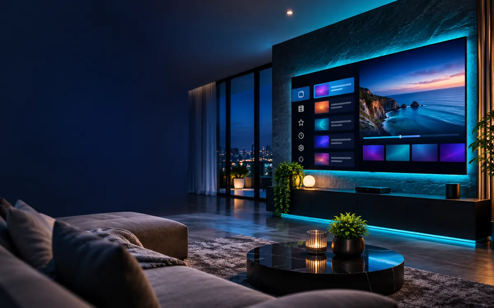
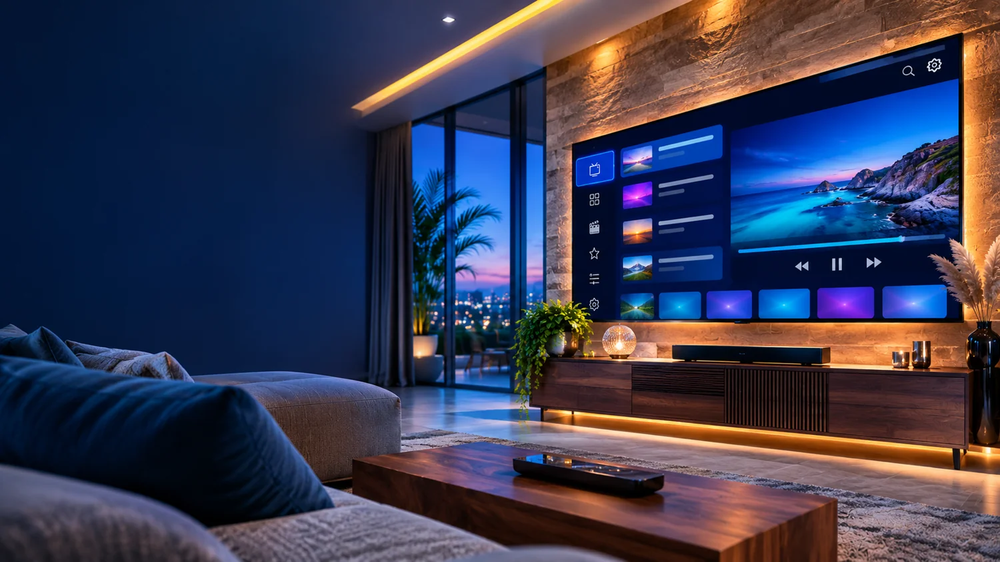

01
Live-TV & Guide
Senderlisten und EPG auf dem Fernseher bequem entdecken und durchsuchen.
Genieße deine eigenen TV-Quellen und Playlists auf dem großen Bildschirm – mit einer modernen TV-Oberfläche.

Alles an einem Ort: Der direkte APK-Link, dein Downloader-Code und der Zugang zu deinem vorhandenen Panel.
Für große Bildschirme und Fernbedienungen. Direkt herunterladen – ohne GitHub-Weiterleitung.
APK herunterladen
Deine persönlichen Quellen, ein klares Interface und einfache Navigation mit der Fernbedienung.
Senderlisten und EPG auf dem Fernseher bequem entdecken und durchsuchen.
Eigene Listen mit den unterstützten Quellformaten verwalten.
Schnelle Menüs und klare Navigation auf großen Bildschirmen.
Playlist-Gruppen und Favoriten übersichtlich organisieren.
Dein bestehendes Global.tv Player Panel für Geräte und Listen direkt erreichen.
Finde deine Sender und verfügbaren Inhalte übersichtlich.

Das Originalpanel bleibt vollständig unverändert. Hier kommst du direkt zu deiner bestehenden Global.tv Player Verwaltung.
Keine Änderungen an MAC-Adressen, TV-Codes oder APK-Verknüpfungen.
globaltv-panel.netlify.app
Beispielhafte Darstellungen unserer TV-Oberfläche und der Panel-Navigation.
Die TV-App ist für Fernbedienung und große Displays ausgelegt.
Bedienung über TV-Fernbedienung, Senderlisten und Wiedergabe im Vollbild.
Deine Quellen bequem auf kompatiblen TV-Geräten entdecken.
Schnell mit dem Downloader-Code installieren, ohne GitHub öffnen zu müssen.
Mit dem Downloader-Code gelangst du zum hinterlegten APK-Link.
is.gd/globaltvapkDas Wichtigste zu Download, Installation und deinem Panel.
Wähle „APK herunterladen“ oder öffne Downloader auf dem TV und gib 2178711 ein.
Dein registrierter Code lautet 2178711. Er verweist auf is.gd/globaltvapk.
Oben rechts findest du „My Global.tv Player Panel“. Der Link öffnet dein bestehendes Panel separat.